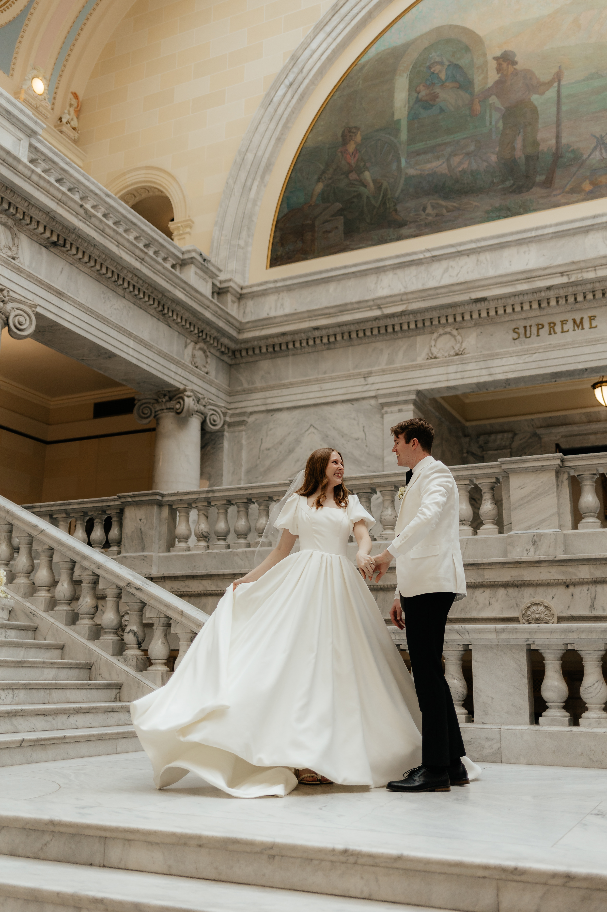
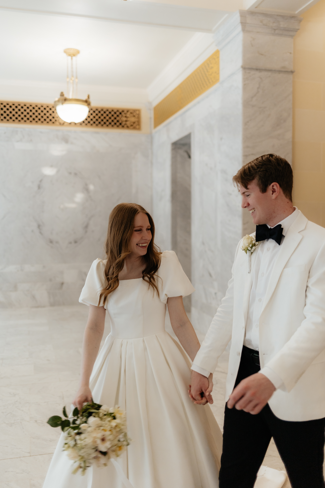
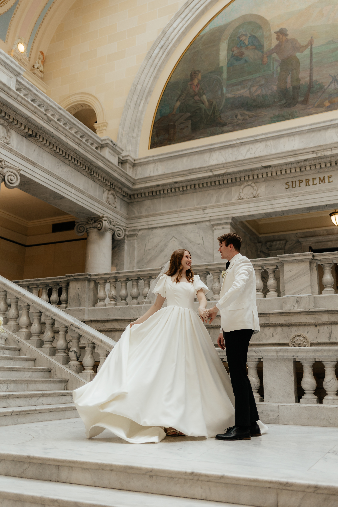
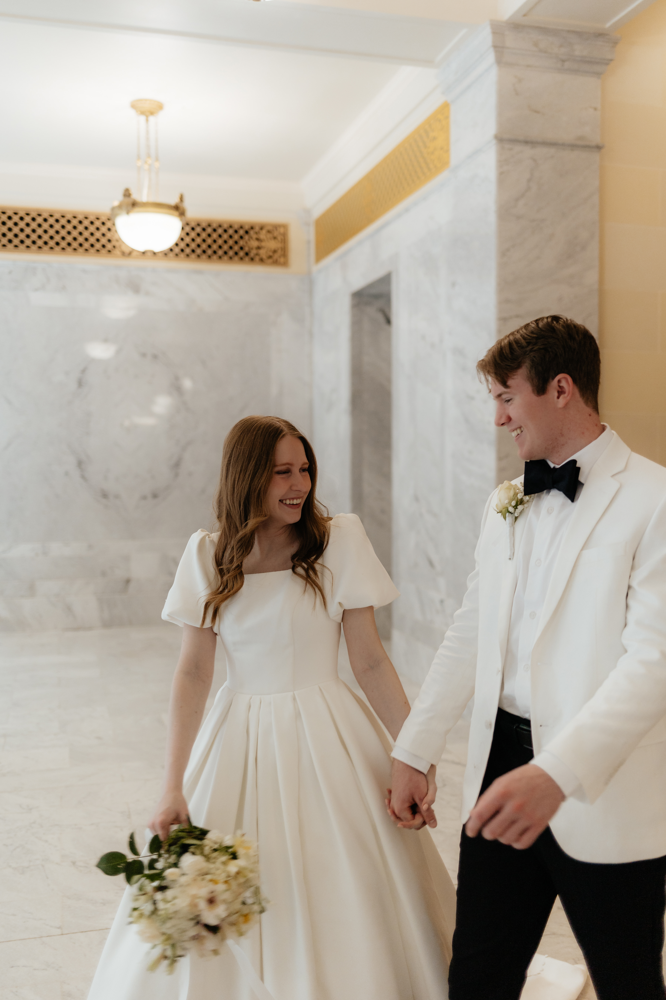

Amber and Arthur will be married on May 3, 2024 in South Jordan Utah in the Oquirrh Mountain temple.
To plan for Utah weather trends, consult either this within the week of the wedding, or this to plan ahead.
Fun Facts about the Couple
-
Amber and Arthur are both studying Information Systems at BYU.
- Arther is a freshman applying in 2025.
- Amber is a junior currently studying Computer Science and applying this summer.
- To see Amber's resume page, click here.
- They met while both serving in the Florida, Fort Lauderdale mission.
- Arthur was called speaking Haitian Creole.
- Amber was called speaking Portuguese.
- Arthur enjoys skateboarding, volleyball, music and board games.
- Amber enjoys ultimate frisbee, painting, and cooking.
Photos of the Couple

 



Drone footage of the Oquirrh Mountain Temple
Back to top